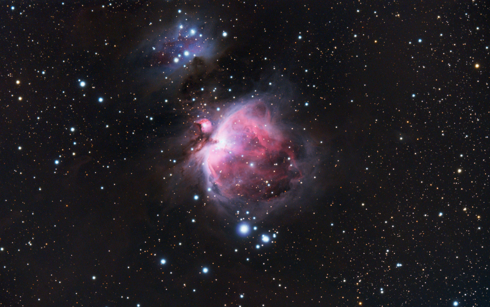
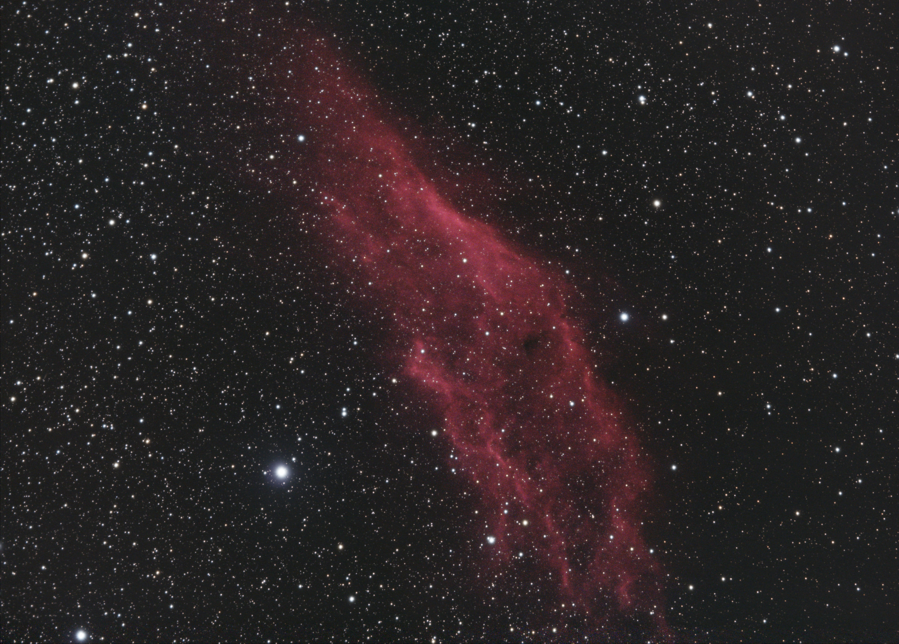
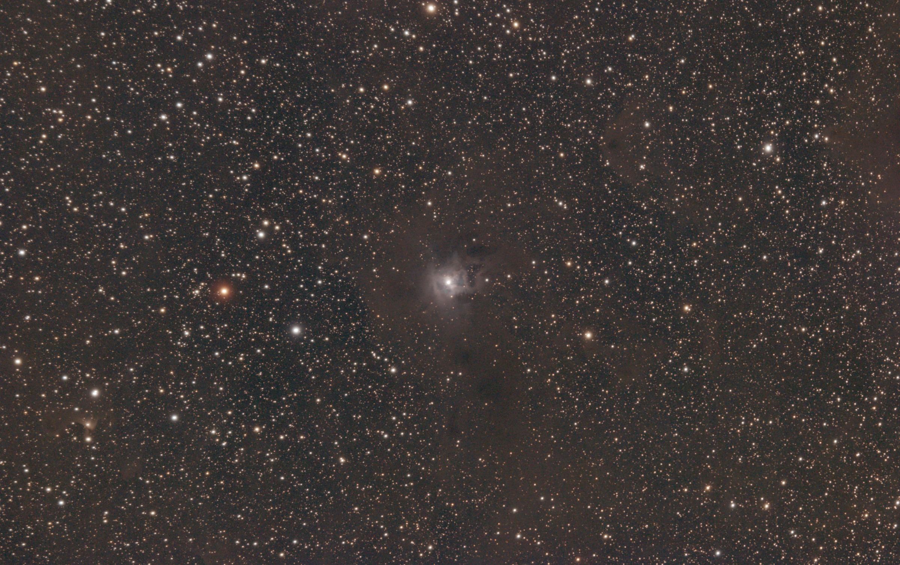
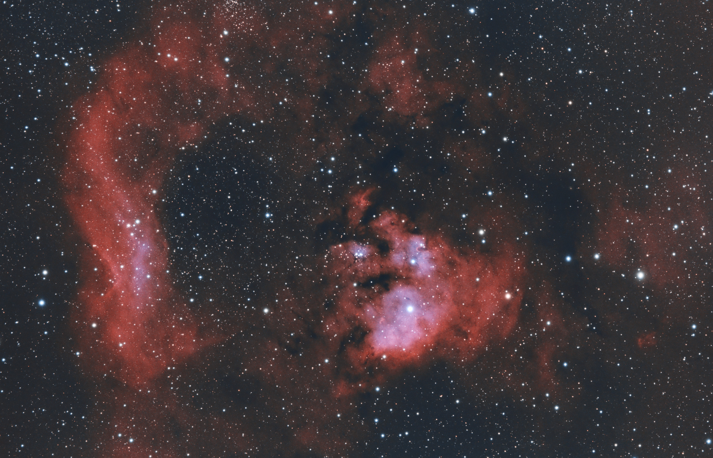

The Orion Nebula (also known as Messier 42, M42, or NGC 1976) is a diffuse nebula situated in the Milky Way, being south of Orion's Belt in the constellation of Orion, and is known as the middle "star" in the "sword" of Orion. It is one of the brightest nebulae and is visible to the naked eye in the night sky with an apparent magnitude of 4.0. It is the closest region of massive star formation to Earth. The M42 nebula is estimated to be 24 light-years across (so its apparent size from Earth is approximately 1 degree). It has a mass of about 2,000 times that of the Sun. Older texts frequently refer to the Orion Nebula as the Great Nebula in Orion or the Great Orion Nebula.
The Orion Nebula is one of the most scrutinized and photographed objects in the night sky and is among the most intensely studied celestial features. The nebula has revealed much about the process of how stars and planetary systems are formed from collapsing clouds of gas and dust. Astronomers have directly observed protoplanetary disks and brown dwarfs within the nebula, intense and turbulent motions of the gas, and the photo-ionizing effects of massive nearby stars in the nebula.

The California Nebula (Also known NGC 1499 or Sh2-220) is an emission nebula located in the constellation Perseus. Its name comes from its resemblance to the outline of the US State of California in long exposure photographs. It is almost 2.5° long on the sky and, because of its very low surface brightness, it is extremely difficult to observe visually. It can be observed with a Hα filter (isolates the Hα line at 656 nm) or Hβ filter (isolates the Hβ line at 486 nm) in a rich-field telescope under dark skies. It lies at a distance of about 1,000 light years from Earth. Its fluorescence is due to excitation of the Hβ line in the nebula by the nearby prodigiously energetic O7 star, Xi Persei (also known as Menkib).

The Iris Nebula (also known as NGC 7023 and Caldwell 4) is a bright reflection nebula in the constellation Cepheus. The designation NGC 7023 refers to the open cluster within the larger reflection nebula designated LBN 487. The nebula, which shines at magnitude +6.8, is illuminated by a magnitude +7.4 star designated HD 200775. It is located near the Mira-type variable star T Cephei, and near the bright magnitude +3.23 variable star Beta Cephei (Alfirk). It lies 1,300 light-years away and is six light-years across.

IC 405 (also known as the Flaming Star Nebula, SH 2-229, or Caldwell 31) is an emission and reflection nebula in the constellation Auriga north of the celestial equator, surrounding the bluish, irregular variable star AE Aurigae. It shines at magnitude +6.0. It is located near the emission nebula IC 410, the open clusters M38 and M36, and the K-class star Iota Aurigae.

NGC 7822 is a young star forming complex in the constellation of Cepheus. The complex encompasses the emission region designated Sharpless 171, and the young cluster of stars named Berkeley 59. The complex is believed to be some 800–1000 pc distant, with the younger components aged no more than a few million years. The complex also includes one of the hottest stars discovered within 1 kpc of the Sun, namely BD+66 1673, which is an eclipsing binary system consisting of an O5V that exhibits a surface temperature of nearly 45,000 K and a luminosity about 100,000 times that of the Sun. The star is one of the primary sources illuminating the nebula and shaping the complex's famed pillars of creation-type formations, the elephant trunks.